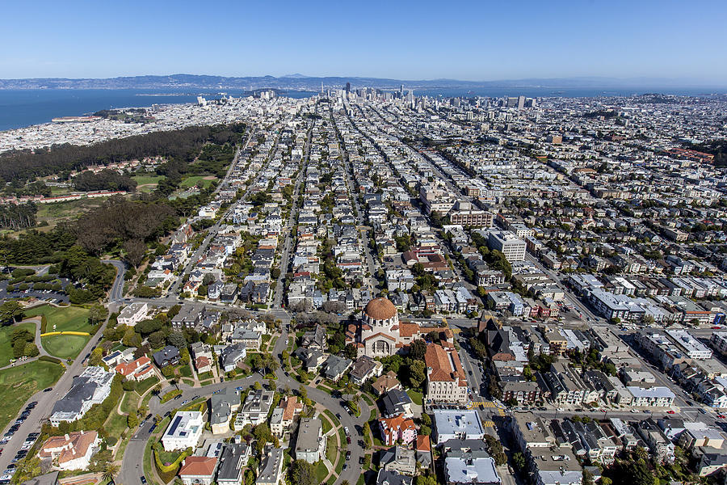
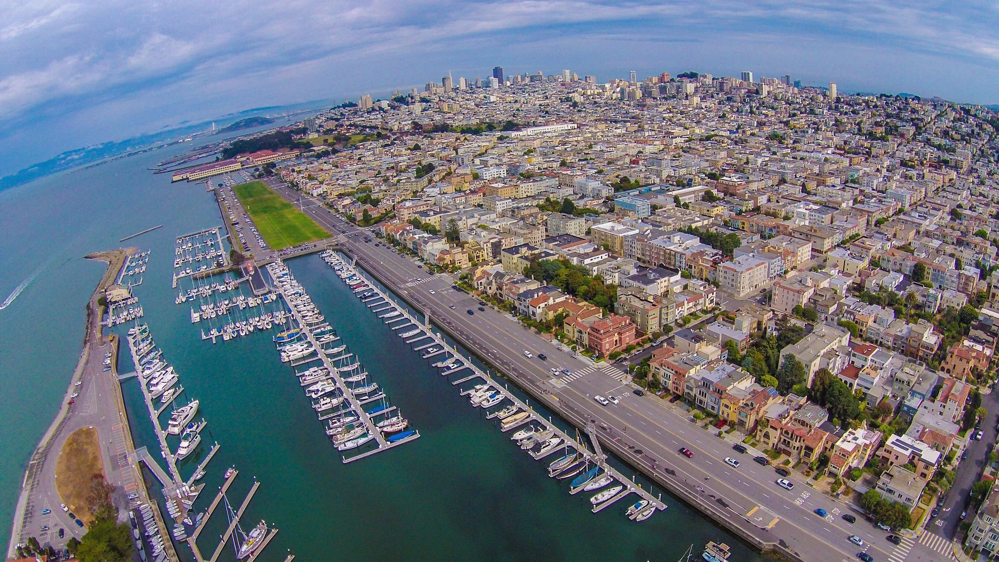
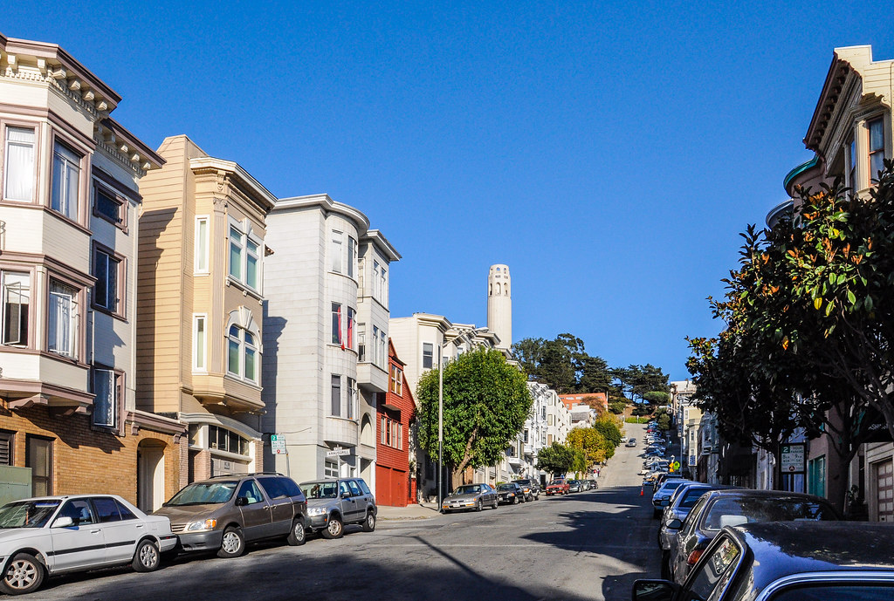
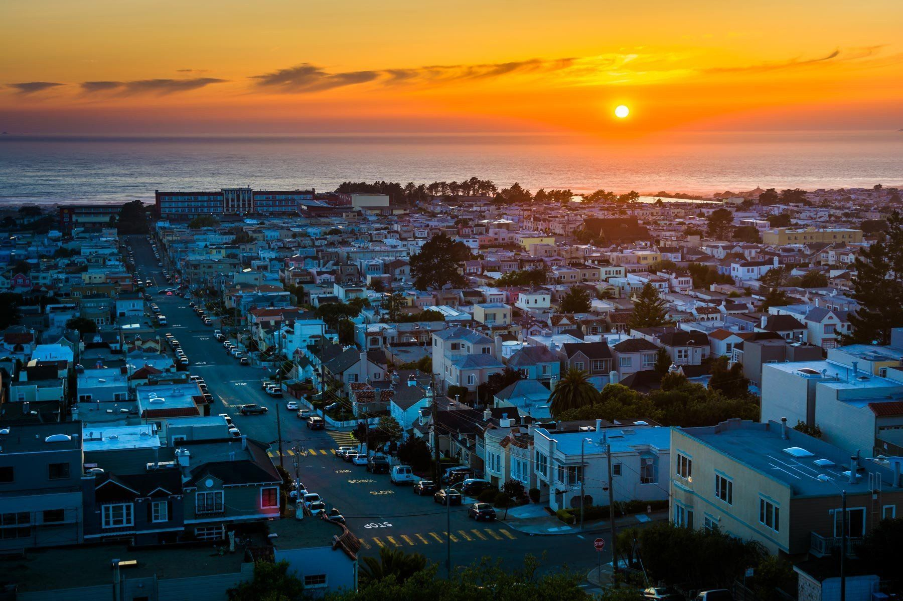
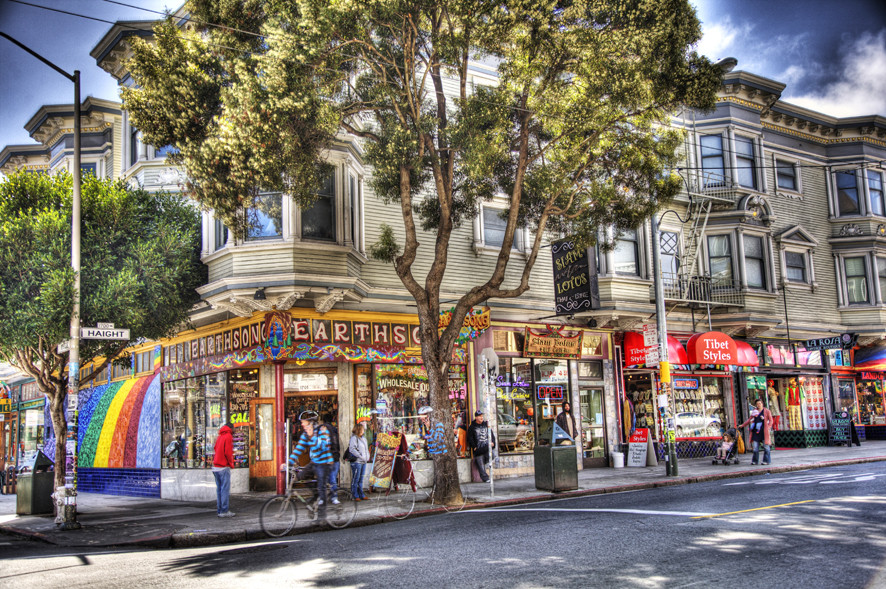
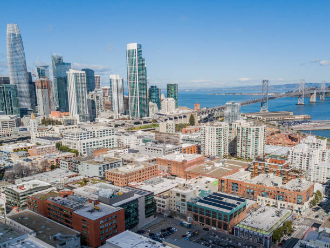
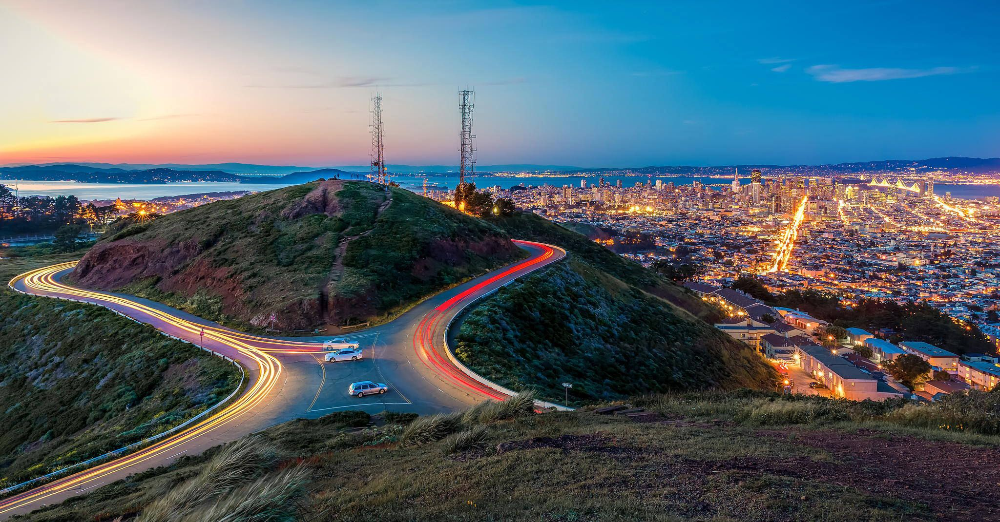
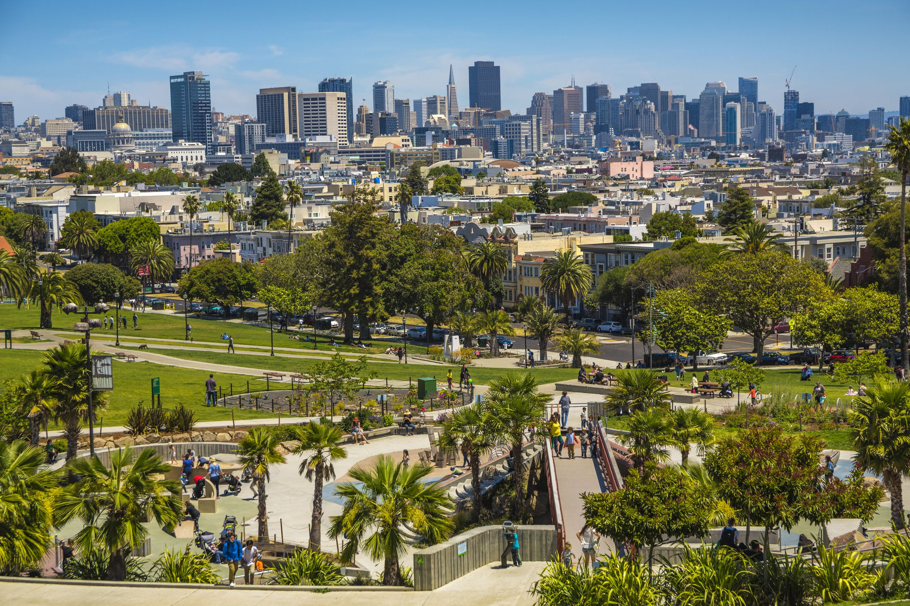
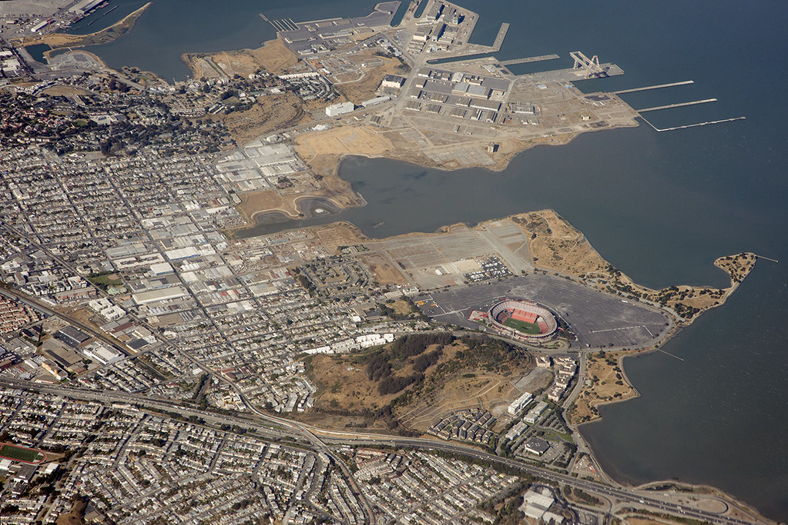
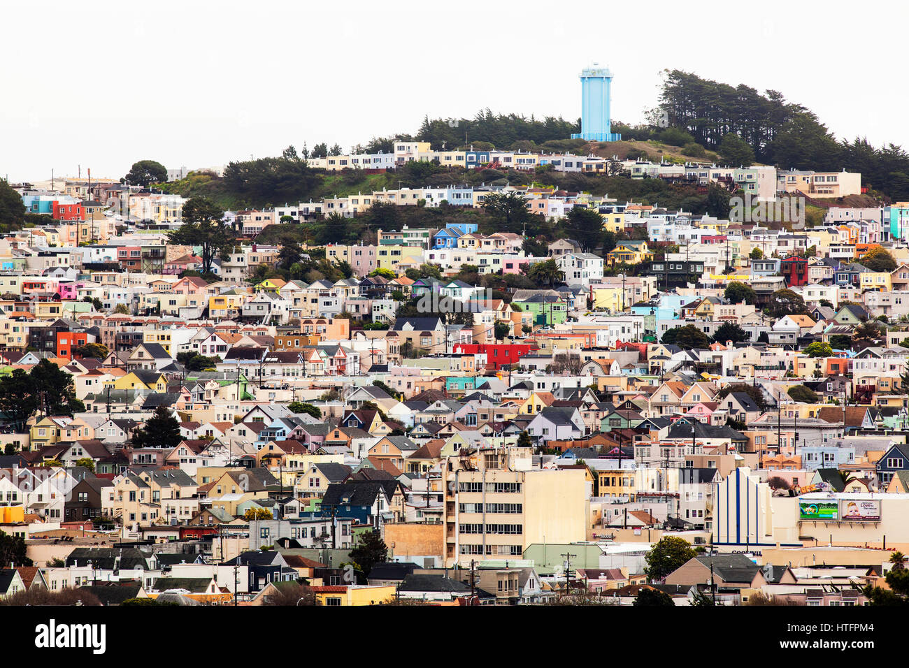

Learn about the 11 districts and the parks within them of San Francisco.

District 1: RichmondThe Richmond district is in the north west corner of the city and is bordered by Golden Gate Park, has the pacific ocean to the east and presidio to the north.

District 2:Presidio/MarinaThe marina is where the Palace of Fine arts known for its beautiful architecture and is also home to a boat dock.

District 3: North water frontFamous for the Fisherman’s Wharf but is home to many neighborhoods such as China Town, Nob Hill, North Beach, Russian Hill, and portions of Down Town.

District 4: SunsetThe sunset district is home to ocean beach with easy access to Golden Gate Park and actually used to be filled with sand dunes up until around the 1920s.

District 5: Western AdditionHome to the Fillmore District and the historic Haight-Ashbury.

District 6: SOMASOMA is south of Market street, home to many of the citys museum and has a few sub-neigborhoods such as South Park, Yerba Buena, and South beach..

District 7: Multiple NeighboorhoodsHome to Twin Peaks and mount sutro and neighboorhoods such as Ocean View, Ingleside, and Forest Hill.

District 8/9:The MissionKnown for its vibrant Latino culture, street art, and many parks such as the famous dolores park .

District 10:Bayview-Hunters PointThe Bayview-Hunters Point is in the south-east corner of the city and was a naval shipyard up until 1964.

District 11: ExcelsiorA residential district with a diverse community and local shops with many big parks such as John McLaren park and Crocker Amazon.